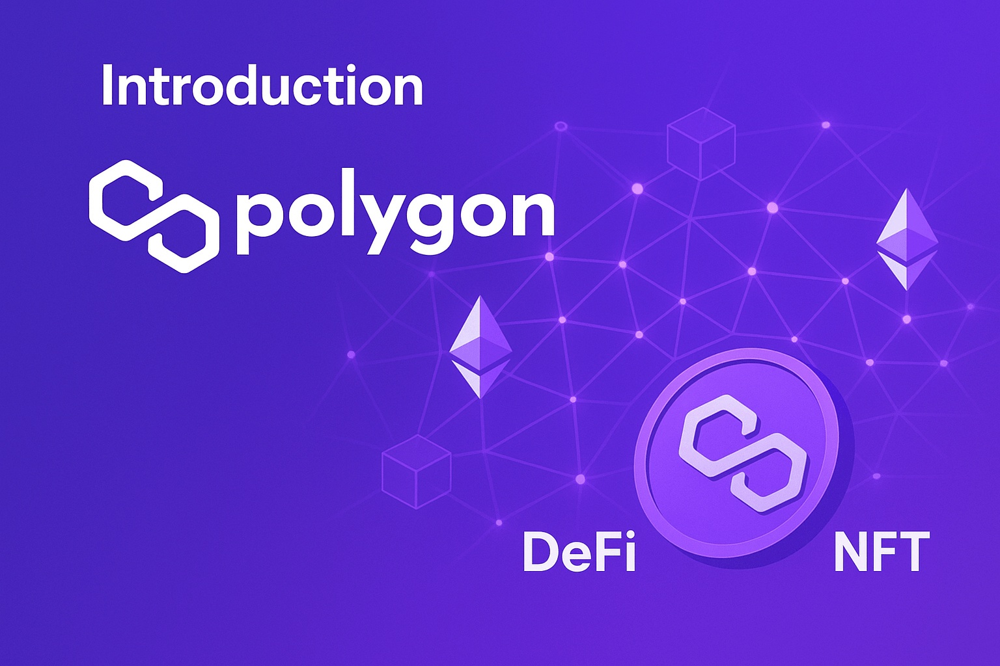

Polygon Price Prediction for End of 2025: In-Depth Analysis and Insights
The information in this article is provided for educational purposes only and is not investment advice. Cryptocurrency investments carry risks.
Introduction
As of August 9, 2025, 02:22 AM EEST, Polygon (MATIC) is trading at approximately $1.80, maintaining its position as a leading layer-2 scaling solution for Ethereum. Polygon enhances Ethereum’s ecosystem by providing low-cost, high-speed transactions through its sidechains and rollup solutions, supporting decentralized finance (DeFi), non-fungible tokens (NFTs), and a wide range of decentralized applications (dApps). Its developer-friendly infrastructure and robust ecosystem make it a cornerstone for Ethereum’s scalability. This article provides a comprehensive analysis of MATIC’s price outlook for the end of 2025, exploring bullish and bearish scenarios, key growth drivers, and potential risks based on market trends and ecosystem developments.
Current Situation
As of August 9, 2025, Polygon’s price stands at around $1.80, reflecting a 20% increase from June 2025, when MATIC traded at $1.50. Over the past 30 days, Polygon has shown consistent strength, with 57% of days closing in the green and a moderate volatility of 5.4%. The Fear and Greed Index at 70 indicates strong investor confidence, driven by Polygon’s widespread adoption in DeFi and NFT ecosystems, extensive developer activity, and its pivotal role in Ethereum’s scaling solutions. Over the past year, MATIC’s price has risen from $1.10, achieving a 63.6% gain. Since 2020, when MATIC was valued at $0.02, it has grown by an impressive 8900%, fueled by its technological advancements and Ethereum’s expanding user base.
Price Predictions for End of 2025
Analyst forecasts for Polygon by December 2025 vary based on market conditions. Bearish scenarios suggest a potential decline to $1.00 if a projected 30–50% market correction occurs in January 2025. Moderate projections estimate MATIC stabilizing between $2.00 and $2.50, supported by steady adoption in DeFi and NFT applications. Bullish forecasts predict MATIC could reach $3.50–$4.00, particularly if a market rebound occurs between February and April 2025. Some analysts project Polygon hitting $2.80 by October 2025 if Ethereum’s ecosystem continues to grow.
Factors Driving Price Growth
- Layer-2 Scaling: Polygon’s sidechains and rollup solutions provide cost-effective and high-speed transactions, enhancing Ethereum’s scalability.
- DeFi Adoption: Polygon’s support for DeFi protocols attracts developers and users, increasing MATIC demand.
- NFT Ecosystem: Growing NFT projects on Polygon expand its utility and user base.
- Market Rally: A projected cryptocurrency market surge in 2025, particularly from February to April, could create a favorable environment for MATIC’s price growth.
- Ethereum Integration: Polygon’s close alignment with Ethereum’s infrastructure strengthens its growth potential.
Risks and Downward Factors
- Market Volatility: A projected 30–50% market correction in January 2025 could exert downward pressure on MATIC’s price, impacting investor sentiment.
- Regulatory Risks: Stricter global regulations on cryptocurrencies could restrict Polygon’s accessibility and adoption.
- Dependency on Ethereum: Polygon’s reliance on Ethereum’s success could limit growth if Ethereum encounters challenges.
Volatility Analysis
From July to August 2025, Polygon’s price rose from $1.50 to $1.80, marking a 20% gain with a volatility of 5.4%, indicating relative stability compared to historical trends. Annual growth of 63.6% underscores MATIC’s strong performance. Technical indicators, including bullish trends in the 50-day and 200-day Exponential Moving Averages (EMAs), suggest continued upward potential. A projected market recovery from February to April 2025 could further support price growth, particularly as Polygon strengthens its role in Ethereum’s scaling ecosystem. Its versatile sidechain architecture and expanding DeFi and NFT applications position it well for sustained adoption and value appreciation.

Conclusion
By the end of 2025, Polygon’s price is projected to range between $2.00 and $3.50, with the potential to reach $4.00 in a bullish market driven by layer-2 scaling, DeFi adoption, and Ethereum integration. However, investors should remain cautious of market volatility, regulatory uncertainties, and Polygon’s dependency on Ethereum. Thorough research and risk management are essential before investing in Polygon.